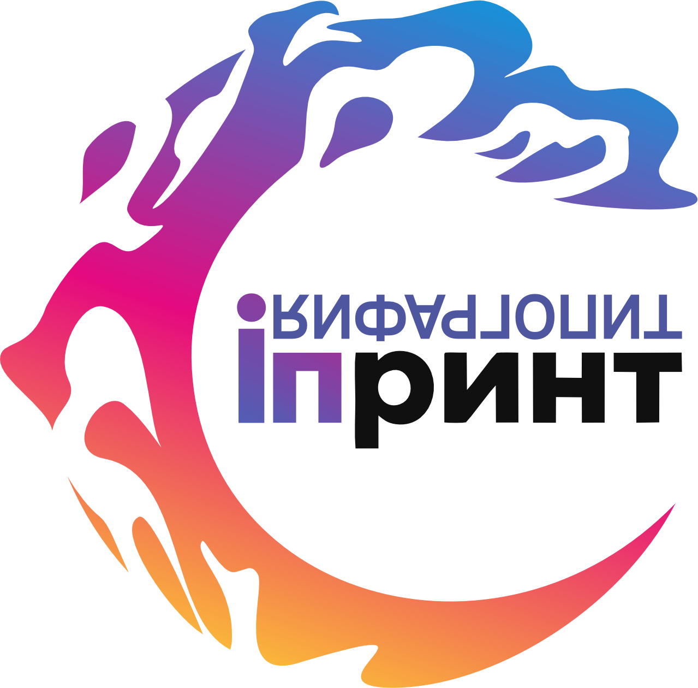

Проверка подключения
Откройте эту страницу на компьютере, где не удаётся войти, без VPN. Проверка не использует логин и пароль и не меняет данные.
После проверки скопируйте результат и передайте его настройщику сайта. Отчёт сам никуда не отправляется.
Вернуться на сайт